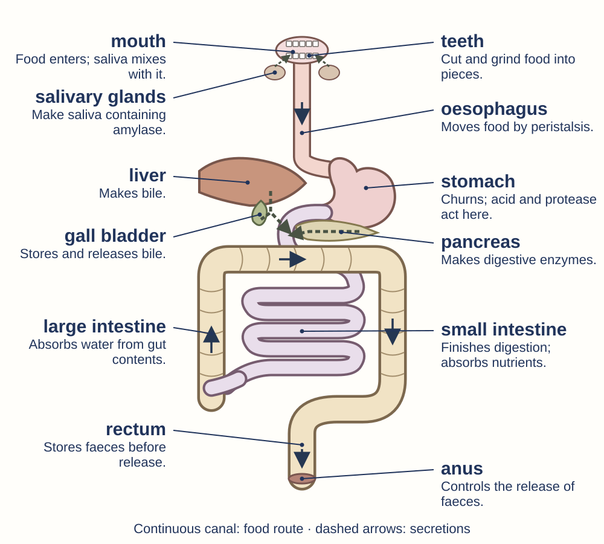

ARCADIA · YEAR 8 SCIENCE · DIGESTION AND NUTRITION
Digestive structures: learning reference
Schematic front view, not to scale. Follow the thick continuous food canal; narrow ducts carry secretions.

Food route: mouth → oesophagus → stomach → small intestine → large intestine → rectum → anus.
Food does not enter the liver, gall bladder or pancreas. Their secretions enter the small intestine.
A villus: structure helps absorption

Many villi: large surface for absorption.
Thin lining: short crossing distance.
Blood supply: carries products away.
Enzyme → food → final products
Carbohydrases → starch → small sugars.
Proteases → protein → amino acids.
Lipase → lipids → fatty acids + glycerol.